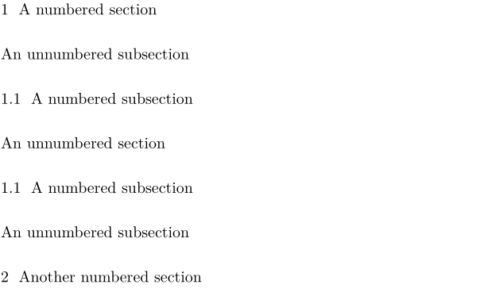

LaTeX
In LaTeX, unnumbered sections, subsections, and so forth can be produced by adding an asterisk to the sectioning command, as in this example.
\section{A numbered section} \subsection*{An unnumbered subsection} \subsection{A numbered subsection} \section*{An unnumbered section} \subsection{A numbered subsection} \subsection*{An unnumbered subsection} \section{Another numbered section}
ConTeXt
ConTeXt provides the same functionality, but the names are different. The following table shows the correspondences:
| Numbered | Unnumbered |
|---|---|
| \part | |
| \chapter | \title |
| \section | \subject |
| \subsection | \subsubject |
| \subsubsection | \subsubsubject |
Thus, the previous example can be written in ConTeXt as the following:
\section{A numbered section} \subsubject{An unnumbered subsection} \subsection{A numbered subsection} \subject{An unnumbered section} \subsection{A numbered subsection} \subsubject{An unnumbered subsection} \section{Another numbered section}
And this produces the following typeset output. Note that, as with LaTeX, a numbered subsection of an unnumbered section doesn't work correctly. Here, unlike in LaTeX, it inherits the "parent" number from the preceeding numbered section.
- 